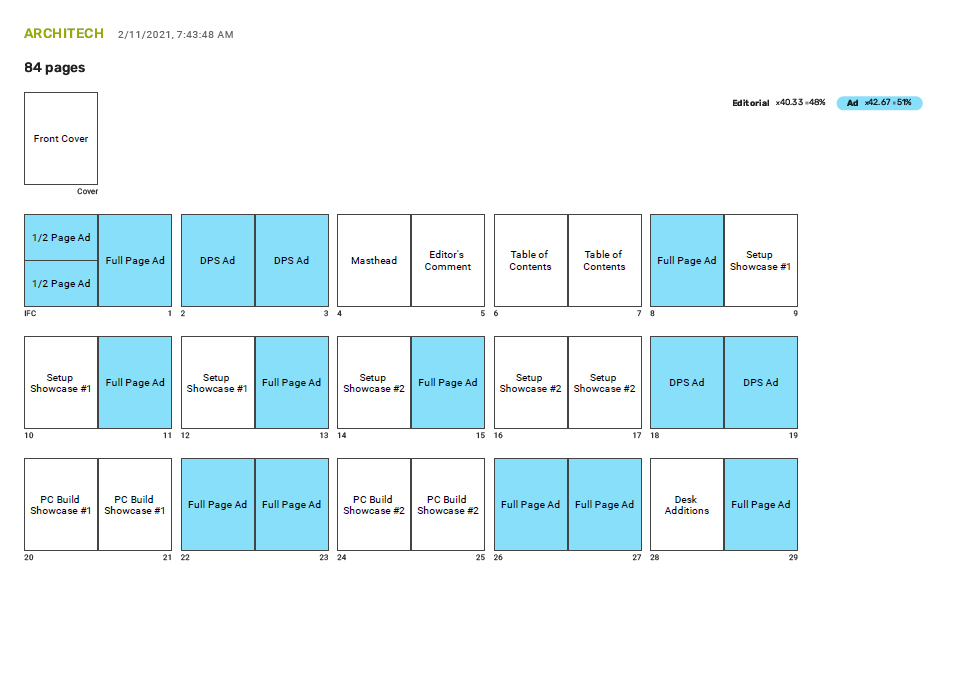
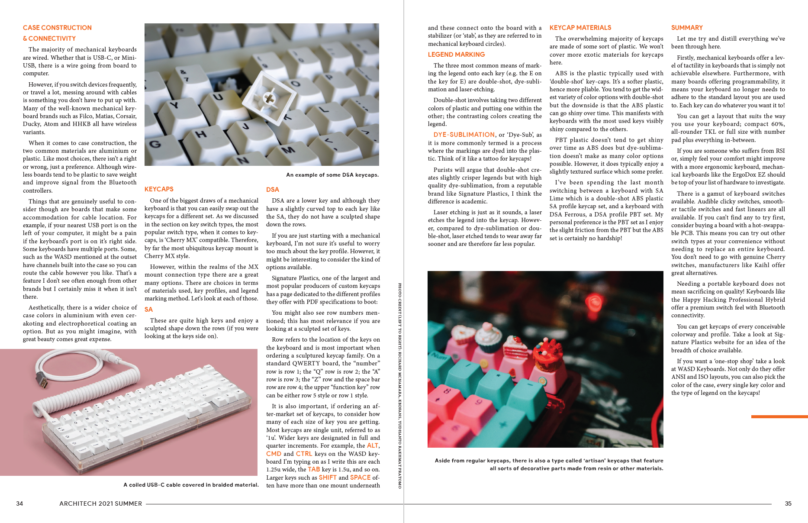

ARCHITECH Magazine.
Description:
ARCHITECH is an editorial and brand project for Publishing 332 at SFU, where I was tasked with creating the magazine's brand, readership, and design. ARCHITECH is aimed at a primarily male audience aged 20+ who live in North America. Readers of ARCHITECH are individuals who are working in the Computer Science or Design fields or just in the home office, but all strive to create a comfortable and clean home office space around their desktop computer.
Disclaimer: Any articles found in this magazine were not written by me, they were pulled from online blogs for the use of educational purposes.
Editorial Mandate:
ARCHITECH Magazine will consist of service, investigative and essay story types all surrounding topics relating to PC building and desk space. These stories seek to explore, inform, and showcase the flexibility and diversity of the home desk space which can be also reflected in computer builds. The overall tone of the stories will have a casual and educational tone while bringing a hint of comedy. These stories will be image-heavy to showcase the overall visual aesthetic of various desk and computer setups, while lengthy essay/opinion pieces will have a lack of images but will have some for support.
Skills:
Sketching + Flat Planning + Research + Design
Team:
Independent
Length:
Jan-April 2021
Tools:
BlinkPlan + Figma + Photoshop + Illustrator + InDesign
Magazine Flat Plan
Process of planning content for each page in the magazine, including where advertisements will go. Only a few select spreads will be fully fleshed out into designed spreads.
Magazine Spreads
 Magazine Spreads DownloadChallenges
The biggest challenge I faced was when I was designing the main focus of the magazine: the editorial feature. These spreads consisted of 6 pages full of text and images, where I had to work with the copy I found. I did my best to maintain all the important pieces of relevant information while breaking it up with supporting images, or the occasional visual diagram to support the text.